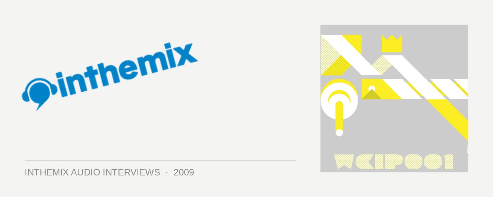

Emerson Todd [Audio]: Keeping it electric
STREAMING AUDIO INTERVIEW
Local underground heroes EQ Recordings may be better know for their Balance series of compilations, where they’ve brought us stunning mixes from the likes of James Holden, Joris Voorn, SOS, Will Saul and many more – but cast an eye for a moment to the also rather excellent Electric offshoot series, where they shift the spotlight to fall on some of dance music’s hugely credible, but perhaps under appreciated stars of the underground. In this case, it’s New Zealand techno mainstay Emerson Todd.
Once one of the top DJs in his home country, Emerson has made massive inroads into Australia’s underground scene over the past few years, becoming synonymous with Sydney’s techno scene in particular with his residency at the now defunct Lost Baggage events. He’d relocated to Australia in 2003 to concentrate on a career in audio engineering that saw him working with acts like The Presets, The Sleepy Jackson, Teenager and Pnau, but he’s since stepped out from behind the scenes. He’s released work on labels like Underwater, Dirtybird, Get Physical and Cocoon, and his recent move to the UK has seen him play alongside heavyweights like Luciano, Dubfire, DJ Sneak and more.
ITM’s Angus Paterson spoke to Emerson Todd while he was over in the UK about his new Electric compilation, finding how Europe is treating him as well as what he’s got coming up on the cards.
Balance Presents Electric 05, mixed by Emerson Todd, is out now through EQ Recordings and Stomp. Catch him at the following shows…
18 Dec – Melbourne @ Onesixone
19 Dec – Brisbane @ Alloneword
26 Dec – Sydney @ Agwa Yacht Club
31 Dec – Gisborne @ Rhythm N Vines